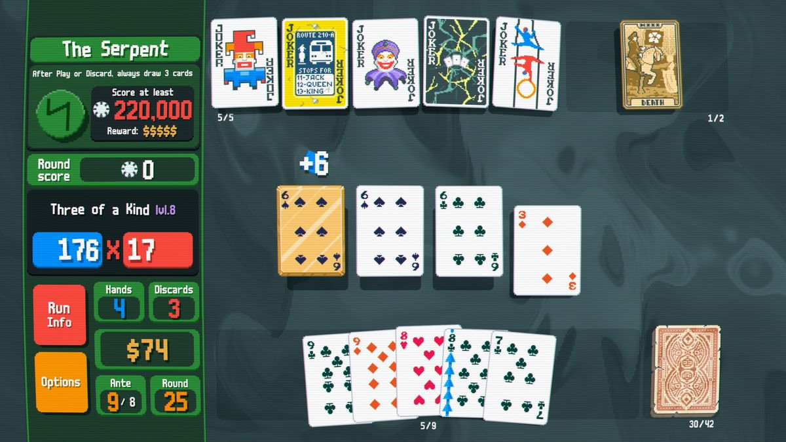
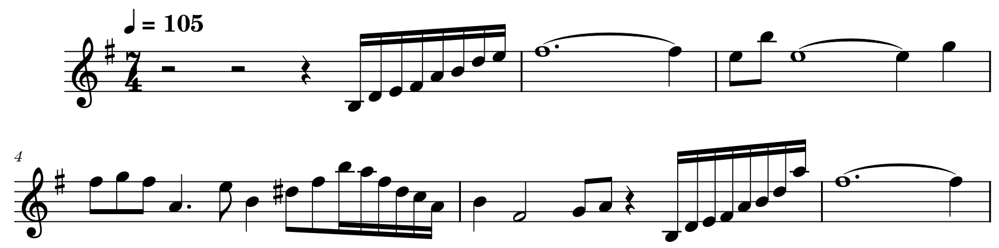
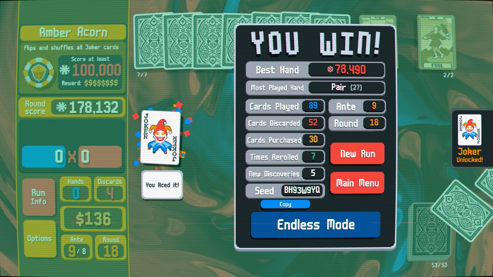

balatro.exe
Balatro
Making a Single Track Last

Poker-themed roguelite Balatro is a relatively newly released game compared to many of the games discussed on this site, but it deserves discussion because of its unlikely origins and its innovative use of only a single track. Balatro’s developer, LocalThunk, lacked the ability to compose a soundtrack for the game, so he contracted the game’s composer, LouisF, through Fiverr. This arrangement would have made it much more difficult and expensive should LocalThunk have needed a more extensive soundtrack, but Balatro is a relatively simple game, and only needed one basic song to loop in the background. While many tracks looping for this long would quickly grow stale, Balatro employs a few tricks to keep its melody fresh. One of the most notable is its irregular time signature. The Balatro soundtrack is in 7/4, which, besides being a reference to the lucky number 7, has the feeling of hanging on a beat too long each measure, making the piece feel much less divided and rigid and allowing it to loop seamlessly because there is less of a perceived “end”.

Early measures in the song.
Another technique used is the layering of various versions of the song, mostly simple effect changes such as increasing the reverb, and fading them in and out as the player does different things in the game. Balatro has five layers that it constantly blends, each with its own style.
Main Theme
The original track, used for the majority of the game.
Shop Theme
Used when the player enters the shop at the end of each round, played at a higher pitch with more reverb and pitch bends.
Arcana Theme
A much more stripped-down version of the track, with only the lead, pads, and percussion. Used when opening certain card packs, such as the namesake Arcana Pack.
Celestial Theme
An even more bare track, with only the pads and minimal percussion. Used when opening other card packs, including the Celestial Pack.
Boss Theme
A pitched-up version of the main theme without the lead,
used for the game’s “Boss Blinds” at the end of each ante.
With this variation in tracks, combined with a drawn-out melody full of runs, Balatro’s one song feels much more adequate to fill an entire game. This is helped greatly by the extremely satisfying sound effects found throughout the game, which fill the auditory space more, as much of Balatro’s music occupies the lower frequencies, and break up the monotony.
Balatro’s incredible audio and visual quality make it no surprise that it gained a very large following soon after it released, despite the fact LocalThunk thought it would only sell 6 copies. Its satisfying gameplay, music, and sounds make it one of the most addictive games available today, and its music’s unlikely origins, just like everything else in the game, shows that anyone can create the next hit game.

Balatro ©2024 LocalThunk, Playstack